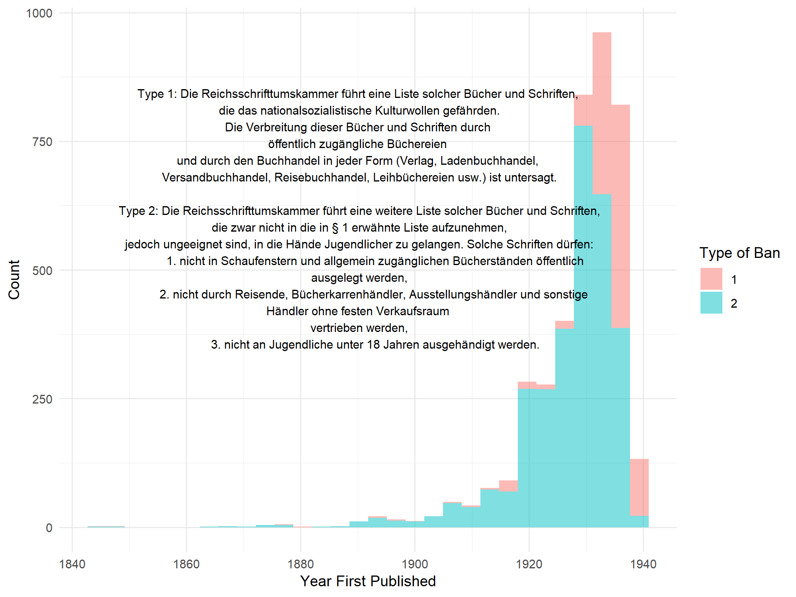
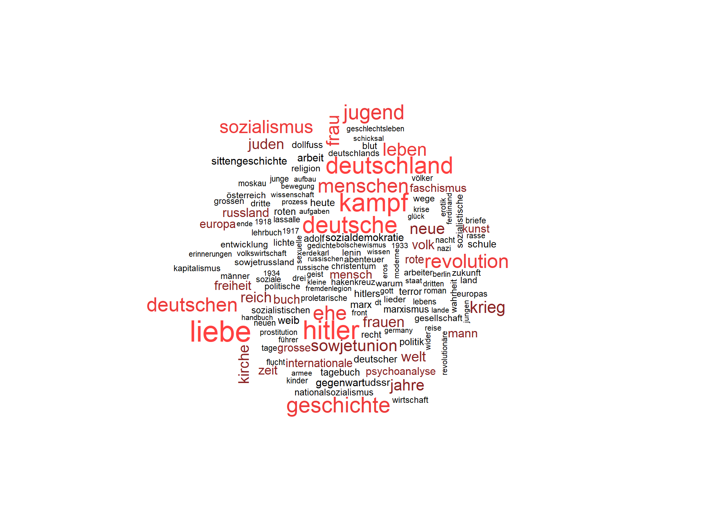
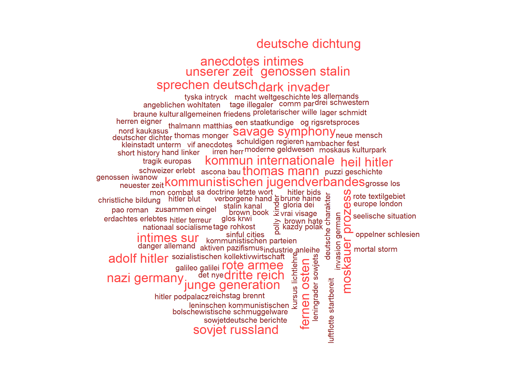
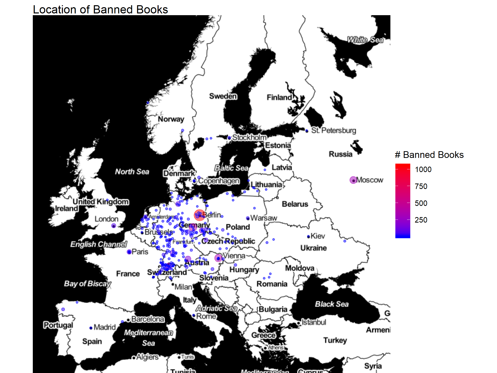
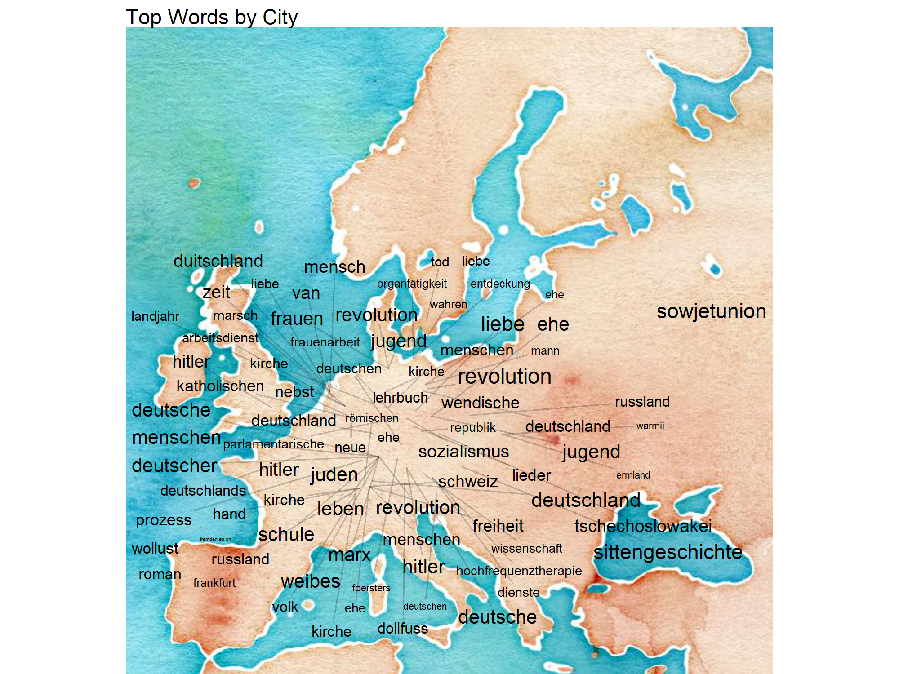
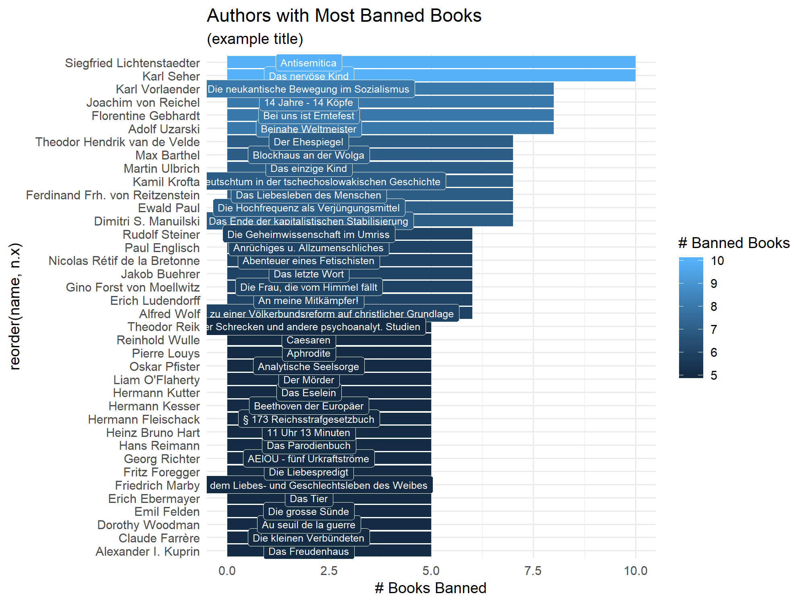
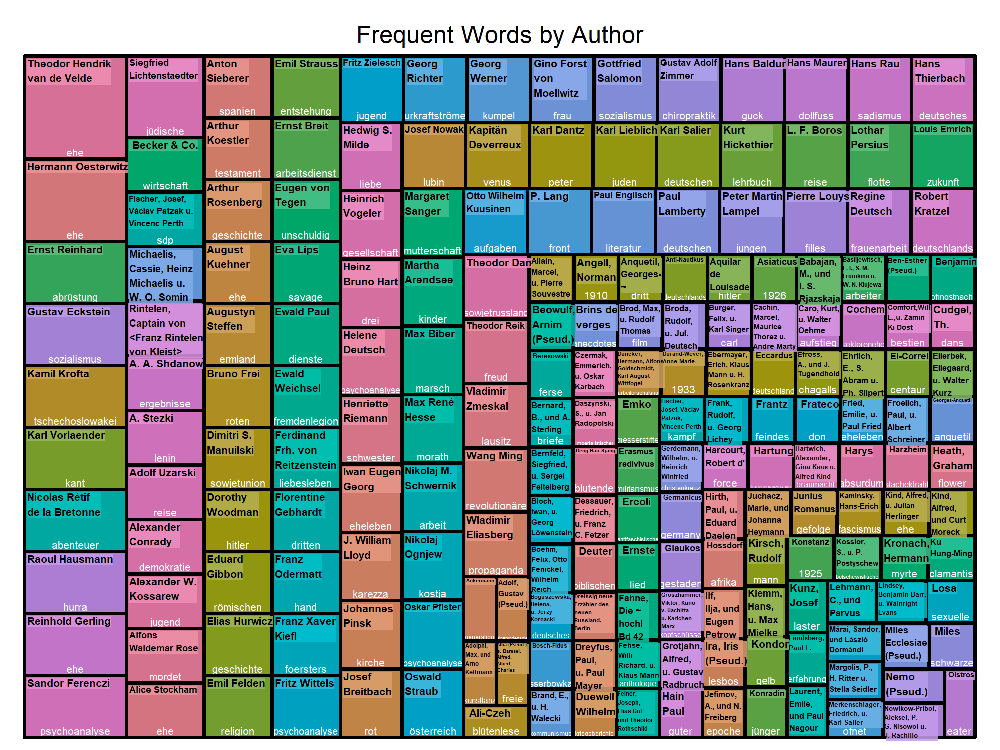

Data Analysis: Books Banned by the Nazis
- Books Banned by the Nazis (Liste der schädlichen und unerwünschten Schrifttums)
- The Data
- Which Year Were Books Banned?
- Wordcloud of Banned Book Titles
- Geomapping Banned Book
- Geomapping Banned Ideas
- Authors with Most Banned Books
- Topics of the 200 Most Banned Authors
- Conclusion
Books Banned by the Nazis (Liste der schädlichen und unerwünschten Schrifttums)
In this data analysis, we will explore the authors, titles, and locations of books that were banned by the Nazis in 1935 using a data set provided by Berlin.de. You can access the data set here: https://daten.berlin.de/datensaetze/liste-der-verbannten-b%C3%BCcher-0. It contains 4762 observations on 13 variables, including the authors’ names, titles, location of publisher, and year of publication.
According to the website, this list was drawn up by the Reich Chamber of Culture (Reichskulturkammer), which was the brainchild of Joseph Goebbels, and was passed on to all libraries and bookstores. According to Wikipedia,
[The Reich Chamber of Culture] was meant to gain control over the entire cultural life in Germany creating and promoting Aryan art consistent with Nazi ideals. Every artist had to apply for membership on presentation of an Aryan certificate. A rejected inscription de facto resulted in an occupational ban.”
I think it’s worth looking at parallels between this and the Trump-era “war” on the media.
The Data
## Observations: 4,762
## Variables: 13
## $ id <int> 70526, 70527, 70528, 70529, 7053...
## $ ssflag <int> 2, 2, 2, 2, 2, 2, 2, 2, 2, 2, 2,...
## $ pagenumberinocrdocument <int> 0, 2, 2, 2, 2, 2, 2, 2, 2, 2, 2,...
## $ name <chr> "Adler Alfred", "Bruno Adler", "...
## $ title <chr> "Praxis und Theorie der Individu...
## $ firsteditionpublisher <chr> "Bergmann", "", "Dümmler", "", "...
## $ firsteditionpublicationplace <chr> "München", "", "Berlin", "", "",...
## $ firsteditionpublicationyear <int> 1930, NA, 1894, NA, NA, NA, NA, ...
## $ secondeditionpublisher <chr> "", "", "", "", "", "", "", "", ...
## $ secondeditionpublicationplace <chr> "", "", "", "", "", "", "", "", ...
## $ secondeditionpublicationyear <chr> "", "", "", "", "", "", "", "", ...
## $ additionalinfos <chr> "", "", "", "", "", "", "", "", ...
## $ ocrresult <chr> "Adler, Alfred: Praxis und Theor...
We can see there are a lot of missing values. And it’s also worth noting that the conversion to text was done via OCR and so there are some mistakes. We have for example, ‘Adler Alfred’ instead of “Alfred Adler,” the dude who came up with the idea of the infamous “Napoleon Complex,” and whose psychological theories were popular in the early 1900s.
Which Year Were Books Banned?
There were actually two types of ‘flags’ used by the SS: the first type was for books that ‘threatened the Nazi culture’ and the second type was for books that were ‘unsuitable to fall into the hands of youth (children under the age of 18).’ These books also could not be shown in storefront windows or placed in bookstores ‘where the general public could find them.’

We see most of the books were published in the 1930s, though it looks like the second type of ban (aimed at youth) targeted books published slightly earlier. The books published in pre-1900 were likely related to communism. Karl Marx’s Manifesto of the Communist Party was published in 1848 and is the earliest published book shown in the histogram.
Wordcloud of Banned Book Titles
We will use the tidytext package and a custom German stopword dataframe to filter out most of the grammar words. Then we will use the Wordcloud package to visualize the top 150 words from the banned titles. We will first look at single words, then at bigrams (which give more context). 
And now bigrams to gain a bit more insight into the context of the words.

In the bigrams cloud, we notice a lot of attention paid to German poetry. It’s likely the Nazis were trying to appropriate the German cultural icons and use them to support their ideology. We also find lots of references to Communism in Russia and China (the Far East). Finally we see the obsession with controlling family values and youth (young generation).
From single words, we can see that many of the banned books focused on topics like Love, War, History, Germany, Marriage, Youth, Jews, Soviet Union, Hitler, Women, Revolution, Psychoanlysis, Socialism,and Church, among many more. I found the focus on sexual topics particularly interesting (erotik, prostitution, sexuelle).
Based on this, we could infer that the Nazis were trying to control how Germans viewed their own history and the events of the Russian Revolution. At the same time, the Nazis were worried about the role of the family and the institution of marriage–particularly the sexual mores of women at the time. And finally, they were attempting to suppress the free expression of ideas related to Christianity and the church.
All of this supports the familiar historical narrative that the Nazis used censorship of the press to support the party ideology of racial superiority. Any books containing ideas that might make people question the party lines were banned from publication.
Geomapping Banned Books
In this graphic, we will look at where banned books were published. In order to do this we will need to geo-code the cities and join them with counts of publications. 
We see that Berlin of course published many of the banned books (over 1000), but also many of the books came from Moscow. These are, again, likely related to Communism and the Russian Revolution, which occurred just a decade or so earlier.
We also can see relatively more books coming from major cities such as London, Paris, and Vienna. Interesting, Switzerland seems to have published many books as well.
Geomapping Banned Ideas
Here we will look at the top words banned from each location to hopefully get a feel for the kinds of ideas in books published in the various cities.

This graphic gives us a feel for which ideas the Nazis wanted to control and where the ideas were originating from. The size of the word is proportional to the number of titles containing the word.
Love and Revolution were coming mainly from Berlin, which was known at the time for having a burgeoning Communist party that the Nazis obviously were not a fan of. It appears the Nazis were also fighting off counter-propaganda from the Soviet Union.
In the south of Germany you can see references to the Catholic church, and in Vienna you can see suppression of ‘Sittengeschichten,’ which translates to ‘history of morality.’
Again, these examples show the extent to which the Nazis waged a culture war on media in order to control and limit the free expression of ideas that went against the party’s social, historical, and religious narrative. This is exactly why Trump’s war on the media sets such a dangerous precedent: by controlling how the populace understands its reality, those in power gain the ability to emotionally manipulate and agitate them in predictable ways.
Authors with Most Banned Books
To get a better idea of which authors the Nazis found most repugnant, we will count the authors with the most banned books and then give an example title to understand the type of books written by that author.

It is interesting for me to see that Rudolf Steiner is one of the most banned authors. There are now many ‘Rudolf Steiner Schools’ all over Germany and the US. Also Ludendorff was one of the German military leaders in WWI, and later was part of the Putsch that attempted to assassinate Hitler unsuccessfully in Munich. It’s not surprising his books were banned.
The relatively benign titles listed here show just how worried the Nazis were about any books related to history, mythology, morality and sexuality (Caeseren, Aphrodite, The Xex life of Women, the Big Sin).
One particularly strange title is “Die Hochfrequenz als Verjuegungsmittel”, or, roughly translated ‘Using High Frequency Waves in Order to Look Younger.” I’m guessing this book went against the Nazi party stance on scientific research.
Topics of the 200 Most Banned Authors
To conclude, we’ll use a treemap to see the most frequent words used in titles from the most frequently banned authors. We should be able to get a rough view of the type of titles each author wrote.

The size of the rectangle is proportional to the number of banned books from the author. We can see Theodor Hendrik Van der Velde (a Dutch Gynecologist and partial discoverer of the curve of human body temperature) wrote books about marriage (Ehe), while Siegfried Lichtenstaedten wrote often about topics related to Judaism. He published works dealt with topics related to political questions of a Jewish history, law, and customs. Sadly, he was murdered in a Ghetto in Theresienstadt in 1942, according to Wikipedia. I encourage you to Google some of these people to learn more about their writings and ideas.
Conclusion
Beware of any politician that tries to limit the free expression of ideas in society.
This list of books highlights the fact that topics which are seemingly unrelated to politics, such as morality tales and mythology, can be appropriated and used by those in power to control popular discourse and keep opposing ideas away from young people, who might be willing to revolt against the system. If the party narrative is pushed hard enough and long enough, people will start to believe it.
Regardless of your view of certain media publishers, such as the New York Times or CNN, the next time Trump says they are the ‘enemy of the people,’ you should remind yourself that the Nazis used the very same tactic to carry out one of the most heinous crimes against humanity and lead the world into one of the most destructive wars ever fought.